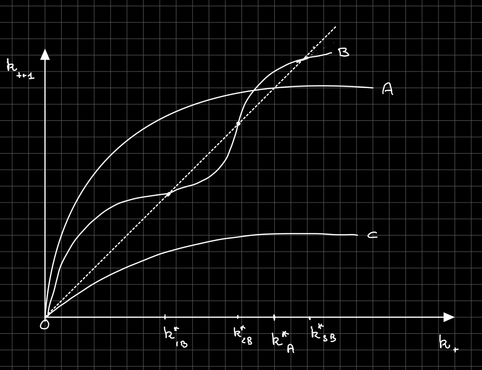
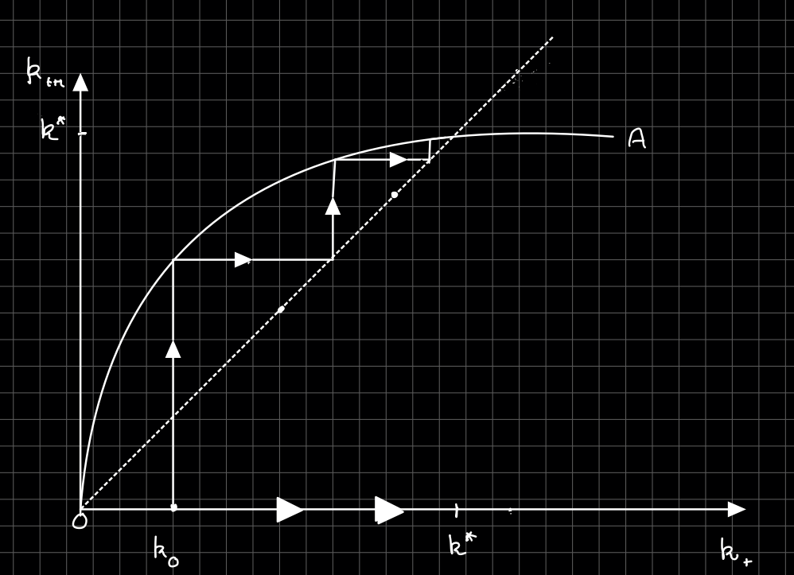
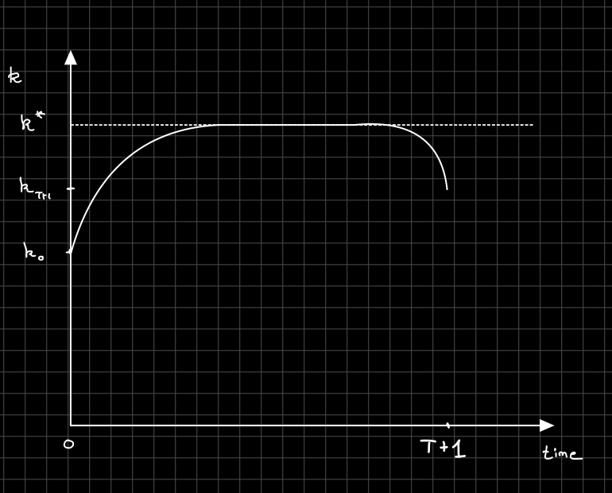

<!doctype html>
<html lang="en">

	<head>
		<meta charset="utf-8">

		<title>reveal.js - Class 6</title>

		<link rel="stylesheet" href="plugin/reveal.css">
		<link rel="stylesheet" href="plugin/black2.css" id="theme">
        <link rel="stylesheet" href="plugin/monokai.css">
        <link rel="stylesheet" href="plugin/title-footer.css">
       
	</head>

	<body>

		<div class="reveal">

			<div class="slides">


                <!-- Slides are separated by three dashes (quick 'n dirty regular expression) -->
                <section data-markdown data-separator="\n---\n" data-separator-vertical="^\n--\n">
                    <script type="text/template">
                        <!-- .slide: style="text-align: left;" -->
                        ## Macroeconomic Theory
                        ### Francesco Franco - Nova SBE
                        #### T3 2022 

                        ---

                        <!-- .slide: style="text-align: left;" -->
                        ### OLG
                        #### Introduction
                        - Allais (1947), Samuelson (1958), Diamond (1965) introduce OLG
                        - Second basic model used in micro-based macroeconomics
                        - life-cycle saving
                        - particularity: there are generation yet unborn whose preferences may not be registered in current market transactions -> pecuniary externalities
                        - competitive equilibrium might not be Pareto optimal (overaccumulation of capital)

                        ---

                        <!-- .slide: style="text-align: left;" -->
                        #### Two-period Lives
                        - time is dicrete
                        - every period 2 cohorts are alive: young and old
                        - an individual bor at time $t$ consumes $c_{1t}$ in period $t$ and $c_{2t+1}$
                         in period $t+1$
                         
                         $$ u(c_{1t})+(1+\rho)^{-1}u(c_{2t+1})$$

                         where $\rho$ is the discount rate and $u$ is a striclty concave felicity function

                        - individuals work only when young, supplying one unit of labor and receiving $w$,
                          they save for retirement consumption

                        ---

                        <!-- .slide: style="text-align: left;" -->
                        #### Two-period Lives

                        - the saving of the period $t$ generates the capital stock of period $t+1$
                        - the number of individuals born at time $t$ is $N_{t}$ and population grows at rate $n$
                        - firms produce using CRS neoclassical production function $y=f(k)$ , where $k$
                         is the capital-labor ratio (net output)

                        ---
                        
                        <!-- .slide: style="text-align: left;" -->
                        ### Decentralized eqbm
                        #### Individuals problem

                        An individual born at time $t$ solve
                        
                        $$max_{c_{1t},c_{2t+1},s_{t}}\,u(c_{1t})+(1+\rho)^{-1}u(c_{2t+1})$$
                        
                        subject to
                        
                        $$c_{1t}+s_{t}	=w_{t}$$
                        $$c_{2t+1}	=(1+r_{t+1})s_{t}$$

                        ---
                        
                        <!-- .slide: style="text-align: left;" -->
                        #### Individuals problem

                        the first order condition for a maximum is
                        
                        $$u'(c_{1t})=(1+\rho)^{-1}\left(1+r_{t+1}\right)u'(c_{2t+1})$$
                        
                        and using the bc we obtain a saving function
                        
                        $$s_{t}=s(w_{t},r_{t+1}),\ 0 < s_{w}< 1,\ s_{r}\lessgtr 0 $$
                        
                        where $s_{w}$ is positive (separability and concavity) and $s_{r}$
                        has an ambiguous sign (again substitution versus income effects)
                        
                        ---

                        <!-- .slide: style="text-align: left;" -->
                    
                        #### Firms
                        
                        Firms maximize profits, foc are 
                        
                        $$f'(k_{t})	=r_{t}$$

                        $$f(k_{t})-k_{t}f'(k_{t})	=w_{t}$$
                        
                        ---

                        <!-- .slide: style="text-align: left;" -->
                        #### Goods market equilibrium

                        Equilibrium requires that in each period demand for goods be equal the supply, 
                        or equivalently that total savings $S_t=s_tN_t$ be equal to investment $K_{t+1}$
                        
                        $$K_{t+1}=N_{t}s(w_{t},r_{t+1})$$
                        
                        which gives in per capita terms:
                        
                        $$\left(1+n\right)k_{t+1}=s\left(w_{t},r_{t+1}\right)$$

                        ---

                        <!-- .slide: style="text-align: left;" -->
                        #### Factor market equilibrium

                        - Supply of labor is inelastic
                        - Supply of capital services in time $t$ is determined by saving decision in time $t-1$.                        
                        - Equilibrium applies when $r$ and $w$ are such that firms which to use the available 
                        amounts of labor and capital services.
                        
                        ---

                        <!-- .slide: style="text-align: left;" -->
                        #### Competitive equilibrium

                        A competitive equilibrium is the sequenes of aggregate capital stock, consumption and prices
                        $\\{K_t,c_{1t},c_{2t},r_t,w_t\\}_{t=0}^{\infty}$ such that first order conditions of the firms and households
                        are respected and the markets clear.

                        ---

                        <!-- .slide: style="text-align: left;" -->
                        #### Dynamics

                        The capital accumulation plus the equilibrium conditions imply
                        
                        $$k_{t+1}	=\frac{s\left[w(k_{t}),r(k_{t+1})\right]}{1+n}$$
                        $$k_{t+1}	=\frac{s\left[f(k_{t})-k_{t}f'(k_{t}),f'(k_{t+1})\right]}{1+n}$$
                        
                        and
                        $\frac{dk_{t+1}}{dk_{t}}=\frac{-s_{w}(k_{t})k_{t}f''(k_{t})}{1+n-s_{r}(k_{t+1})f''(k_{t+1})}.$

                        ---

                        <!-- .slide: style="text-align: left;" -->
                        #### Dynamics

                        $$\frac{dk_{t+1}}{dk_{t}}=\frac{-s_{w}(k_{t})k_{t}f''(k_{t})}{1+n-s_{r}(k_{t+1})f''(k_{t+1})}$$
                        
                        - the numerator is positive: an increase in $k_{t}$ increase the wage which increases saving
                        - the denominator is ambiguous. 
                        - Plot possibilities in $\left(k_{t+1},k_{t}\right)$ space. Existence, uniqueness, stability. 
                        (local $\left|\frac{dk_{t+1}}{dk_{t}}\right|< 1$)

                        ---

                        <!-- .slide: style="text-align: left;" -->
                        #### Competitive equilibrium Steady State
                        <center></center>

                        ---

                        <!-- .slide: style="text-align: left;" -->
                        #### CRRA and Cobb-Douglas Case

                        Suppose the utility is 

                        $$\frac{(c_{1t})^{1-\frac{1}{\sigma}}}{1-\frac{1}{\sigma}}+(1+\rho)^{-1}\frac{(c_{2t+1})^{1-\frac{1}{\sigma}}}{1-\frac{1}{\sigma}}$$

                        subject to
                        
                        $$c_{1t}+s_{t}	=w_{t}$$
                        $$c_{2t+1}	=(1+r_{t+1})s_{t}$$
                        

                        ---

                        <!-- .slide: style="text-align: left;" -->
                        #### CES (CRRA) and Cobb-Douglas Case

                        the first order condition for a maximum is
                        
                        $$(c_{1t})^{-\frac{1}{\sigma}}=(1+\rho)^{-1}\left(1+r_{t+1}\right)(c_{2t+1})^{-\frac{1}{\sigma}}$$
                        
                        and using the bc we obtain a saving function
                        
                        $$s_{t}=\frac{w_{t}}{1+(1+\rho)^{\sigma}\left(1+r_{t+1}\right)^{1-\sigma}}=\frac{w_{t}}{\psi\left(t+1\right)}$$
                        
                        where $\psi\left(t+1\right)>1$.

                        ---

                        <!-- .slide: style="text-align: left;" -->
                        #### CRRA and Cobb-Douglas Case

                        Now $$s_{w}=\frac{1}{\psi\left(t+1\right)}\in\left(0,1\right)$$

                        advantage
                        
                        $$s_{r}=\left(\sigma-1\right)\left(\frac{1+\rho}{1+r_{t+1}}\right)^{\sigma}\frac{s_{t}}{\psi\left(t+1\right)}$$

                        where $s_{r}>0$ if $\sigma>1$, $s_{r}< 0$ if $\sigma< 1$ and $s_{r}=0$ if $\sigma=1$

                        ---

                        <!-- .slide: style="text-align: left;" -->
                        #### CRRA and Cobb-Douglas Case
                        Using the Cobb-Douglas $k^\alpha$ production function we have
                        $$\alpha k_t^{(\alpha-1)}	=r_{t}$$
                        $$(1-\alpha)k_t^\alpha	=w_{t}$$

                        ---

                        <!-- .slide: style="text-align: left;" -->
                        #### CRRA and Cobb-Douglas Case

                        Now the equilibrium simplifies to 

                        $$k_{t+1}=\frac{s_t}{1+n}$$
                        $$k_{t+1}=\frac{w_{t}}{\psi(t+1)(1+n)}$$
                        $$k_{t+1}=\frac{(1-\alpha)k_t^\alpha}{\left(1+(1+\rho)^{\sigma}\left(1+\alpha k_{t+1}^{(\alpha-1)}\right)^{1-\sigma}\right)(1+n)}$$

                        ---

                        <!-- .slide: style="text-align: left;" -->
                        #### CRRA and Cobb-Douglas Case

                        The steady state is unique and 

                        <span>
                        \[\begin{aligned}
                        k^{*}=\frac{(1-\alpha)k^{*\alpha}}{\left(1+(1+\rho)^{\sigma}\left(1+\alpha k^{*(\alpha)}\right)^{1-\sigma}\right)(1+n)}
                        \end{aligned} \]
                        <span>

                        using the definition of the interest rate (here depends on more parameters than in the Ramsey model)

                        <span>
                            \[\begin{aligned}
                            \left(1+(1+\rho)^{\sigma}\left(1+r^{*}\right)^{1-\sigma}\right)(1+n)=\frac{(1-\alpha)}{\alpha}r^{*}
                            \end{aligned} \]
                        <span>

                        ---

                        <!-- .slide: style="text-align: left;" -->
                        #### CES - Cobb-Doulgas Steady State
                        <center></center>

                        ---
                        
                        <!-- .slide: style="text-align: left;" -->
                        #### Government
                        Suppose households pay taxes when they work to finance $g$ 

                        $$c_{1t}+s_{t}=w_{t}-\tau_{1,t}$$

                        ---
                        
                        <!-- .slide: style="text-align: left;" -->
                        #### Government

                        Government budget constraint with debt

                        $$b_{t+1}(1+n)=g_{t}-\tau_{1,t}+\left(1+r_{t}\right)b_{t}$$
                        $$\sum_{i=0}^{\infty}\left(1+n\right)^i\prod_{j}^{i}\frac{1}{1+r_{t+j}}\left(\tau_{1,t+i} - g_{t+i}\right)=b_{t}$$ 
                        
                        Now if changes in $g$ are financed through changes in future $\tau$ they have an effect. Failure of Ricardian Equivalence.


                        ---
                         <!-- .slide: style="text-align: left;" -->
                         #### Government        

                        Capital market equilibrium

                        Equilibrium requires that in each period demand for assets be equal the supply, or equivalently that saving be equal to investment
                        
                        $$K_{t+1}+B_{t+1}=N_{t}s(w_{t},r_{t+1})$$
                        
                        which gives
                        
                        $$\left(1+n\right)\left(k_{t+1}+b_{t+1}\right)=s\left(w_{t},r_{t+1}\right)$$
                        
                        ---

                        <!-- .slide: style="text-align: left;" -->
                        #### CES  with government 

                        The government budget implies
                        
                        $$b=\frac{\tau_{1}-g}{(r-n)}$$

                        and the equilibrium in asset markets, foc oh households and firms
                        
                        $$\left(1+n\right)\left(k+b\right)=\frac{w-\tau_{1}}{1+(1+\rho)^{\sigma}\left(1+r\right)^{1-\sigma}}$$
                        $$f'(k)	=r$$
                        $$f(k)-kf'(k)	=w$$ 
                        
                        which shows that level of debt is affecting capital accumulation.

                        ---
                        
                        <!-- .slide: style="text-align: left;" -->
                        ### Social Planner solution
                        #### Welfare function

                        When individuals have infinite horizons, it is logical to take the social welfare function 
                        to be their own utility function. here, each generation cares only about itself and not about
                        future generations. What is the Social Planner objective? 
                        Here we simply assume he maximizes future generations utility at rate $R$.
                        
                        $$U=(1+\rho)^{-1}u(c_{20})+\sum_{t=0}^{T-1}(1+R)^{-t-1}\left[u(c_{1t})+(1+\rho)^{-1}u(c_{2t+1})\right]$$ 
                        
                        where SP cares only about the next $T$ generations.
                        
                        ---

                        <!-- .slide: style="text-align: left;" -->
                        #### Resource contraints

                        The resource constraint of the planner is
                        
                        $$K_{t}+F(K_{t},N_{t})=K_{t+1}+N_{t}c_{1t}+N_{t-1}c_{2t}$$ 
                        
                        which in per capita terms is
                        
                        $$k_{t}+f(k_{t})=(1+n)k_{t+1}+c_{1t}+(1+n)^{-1}c_{2t}$$

                        so the SP max the welfare function s.t. the resource constraints is satisfied and two boundaries conditions on $k$.
                                                
                        ---
                        <!-- .slide: style="text-align: left;" -->
                        #### Necessary and Sufficient conditions

                        the foc of the planner are
                        
                        $$u'(c_{1t})=(1+\rho)^{-1}\left(1+R\right)\left(1+n\right)u'(c_{2t})$$
                        and
                        $$u'(c_{1t-1})=(1+n)^{-1}(1+R)^{-1}\left(1+f'(k_{t})\right)u'(c_{1t})$$

                        where the first is the intratemporal allocation between the two cohorts and the second is the intertemporal allocation of one cohort.
                        
                        Combine the two foc and obtain (same way as the individual allocates resources within his lifetime)
                        
                        $$u'(c_{1t-1})=(1+\rho)^{-1}\left(1+f'(k_{t})\right)u'(c_{2t})$$

                        ---
                         <!-- .slide: style="text-align: left;" -->
                        #### Turnpike and steady state
                        The economy is described by 
                        
                        $$k_{t}+f(k_{t})=(1+n)k_{t+1}+c_{1t}+(1+n)^{-1}c_{2t}$$ 
                        $$u'(c_{1t})=(1+\rho)^{-1}\left(1+R\right)\left(1+n\right)u'(c_{2t})$$ 
                        $$u'(c_{1t-1})=(1+n)^{-1}(1+R)^{-1}\left(1+f'(k_{t})\right)u'(c_{1t})$$
                        
                        and $k_{0}$ and $k_{T+1}$.

                        ---
                         <!-- .slide: style="text-align: left;" -->
                        #### Turnpike and steady state
                        <center></center>

                        ---

                         <!-- .slide: style="text-align: left;" -->
                        #### Optimum

                        The steady state (assuming we converge there, discuss $T -> \infty$, $R< 0$)
                        
                        $$1+f'(k^{*})=(1+n)(1+R)$$
                        
                        given $R$ is arbitrary it is not surprising that he can differ from
                        the equilibrium outcome of the decentralized economy.
                        What about Pareto optimality?
                        Define $c_{t}=c_{1t}+(1+n)^{-1}c_{2t}$. The resource constraint in steady state (denoted with a $*$)
                        
                        <span>
                            \[\begin{aligned}
                            c^* = f(k^*) - n k^{*}
                            \end{aligned} \]
                        <span>
                        
                        and look at
                        
                        <span>
                            \[\begin{aligned}
                            \frac{dc^{*}}{dk^{*}} = \left[f'(k^{*})-n\right]\gtrless0
                            \end{aligned} \]
                        <span>
                        
                        which suggests the importance of the GR for capital. When the allocation is such that the capital stock is to high we say the allocation is dynamically inefficient.
                        
                        ---
                        
                        <!-- .slide: style="text-align: left;" -->
                        #### Dynamic inefficiency and Pareto optimum

                        Suppose we decrease permanently $k$ by $dk$ starting from the steady state

                        $$dc_{t}=-\left(1+n\right)dk>0$$
                        $$dc_{t+i}=\left(f_{k}-n\right)dk>0\ \ if\ f_{k}< n\ for\ i>0$$

                        ---
                        <!-- .slide: style="text-align: left;" -->
                        #### Innefficiency in the Market Economy

                        Can market economies overaccumulate capital? 
                        Example log utility and Cobb-Douglas ($f(k) = k^\alpha -\delta k$)
                        
                        $$r^*=\frac{\alpha\left(1+n\right)\left(2+\rho\right)}{1-\alpha}-\delta$$ 
                        
                        reasonable parameters are consistent with $r^{*}< n$. 
                        - extended to productivity growth
                        - consider risky assets -> which interest rate is the relevant one ? 
                        
                        ---
                        <!-- .slide: style="text-align: left;" -->
                        #### Altruism replicates command optimum

                        Bequests (large share of wealth) affect intertemporal allocations. Now 
                        
                        $$V_{t}=u(c_{1t})+(1+\rho)^{-1}u(c_{2t+1})+(1+R)^{-1}V_{t+1}$$
                        and
                        $$V_{t}=\sum_{i=0}^{\infty}(1+R)^{-i}\left[u(c_{1t+i})+(1+\rho)^{-1}u(c_{2t+i+1})\right]$$

                        and the bc 
                        
                        $$c_{1t}+s_{t}	=w_{t}+b_{t}$$
                        $$c_{2t+1}+(1+n)b_{t+1}	=(1+r_{t+1})s_{t}$$

                        ---
                        <!-- .slide: style="text-align: left;" -->
                        #### Altruism replicates command optimum

                        Steady state is now

                        <span>
                            \[\begin{aligned}
                            \left(1+r^{*}\right)\leq\left(1+n\right)\left(1+R\right) \ b=0
                            \\
                            \left(1+r^{*}\right)=\left(1+n\right)\left(1+R\right) \ b>0
                            \end{aligned} \]
                        <span>

                        Note difficulty for bequests $b_{t}$ should not be negative. 
                        Economy can still be dynamically inefficient because pecuniary externalities can still be present.
                        

                        ---
                        <!-- .slide: style="text-align: left;" -->
                        #### Social Security and Capital Accumulation

                        Retirement programs were introduced for redistribution and paternalism considerations.
                        Here we focus on their effects on capital accumulation. let $d_{t}$ the contribution of
                        a young person and $b_{t}$ the benefit for an old. Two systems:

                        1. fully funded, $b_{t}=(1+r_{t})d_{t-1}$

                        2. pay as you go, $b_{t}=(1+n)d_{t}$

                        ---
                        <!-- .slide: style="text-align: left;" -->
                        #### Social Security and Capital Accumulation

                        1. FF: If $d_{t}<(1+n)k_{t+1}$ the fully funded system has no effect on total savings and 
                        capital accumulation: $s_{t}$ and $d_{t}$ are perfect substitutes.
                        
                        $$u'(w_{t}-s_{t}-d_{t})=(1+\rho)^{-1}u'\left[\left(1+r_{t+1}\right)\left(s_{t}+d_{t}\right)\right]$$

                        2. PAYG: rate of return is $n$ on the contribution 
                        
                        $$u'(w_{t}-s_{t}-d_{t})=(1+\rho)^{-1}u'\left[\left(1+r_{t+1}\right)s_{t}+(1+n)d_{t+1}\right]$$ 
                        
                        but the only source of capital is private saving.

                        ---
                        <!-- .slide: style="text-align: left;" -->
                        #### Social Security and Capital Accumulation

                        The effect of social security PAYG on private saving (given wages and interest rates) is
                        
                        $$\frac{\partial s_{t}}{\partial d_{t}}=-\frac{u_{1}^{''}+(1+\rho)^{-1}(1+n)u_{2}^{''}}{u_{1}^{''}+(1+\rho)^{-1}(1+r_{t+1})u_{2}^{''}}< 0$$

                        and they decrease private saving more than one to one depends on $n$ and $r$.
                        
                        ---
                        <!-- .slide: style="text-align: left;" -->
                        #### Social Security and Capital Accumulation

                        Now the GE effect: decrease in capital increase interest rates and decrease wages,
                         but to have unambigous effects need to assume again something on $s_{r}$. 
                         Assume stable and non oscillatory economy:
                         
                         $$\left(1+n\right)k_{t+1}=s\left[w_{t}(k_{t}),r_{t+1}(k_{t+1}),d_{t}\right]$$
                         then
                         $$\frac{dk_{t+1}}{dd_{t}}=\frac{\frac{\partial s_{t}}{\partial d_{t}}}{1+n-s_{r}f''}< 0$$
                         
                        The impact is to slow the rate of capital accumulation and decrease the steady state capital stock.
                        Is this desirable? It depends on the dynamic efficiency of the economy.

                
                        
                    </script>
                </section>

            </div>
		</div>

		<script src="plugin/reveal.js"></script>
        <script src="plugin/markdown.js"></script>
        <script src="plugin/highlight.js"></script>
        <script src="plugin/notes.js"></script>
        <script src="plugin/plugin.js"></script>
        <script src="plugin/math.js"></script>
        <script src="plugin/plugin.js"></script>
        <script src="plugin/menu.js"></script>
        <script src="plugin/pdfexport.js"></script>

		<script>

			Reveal.initialize({
				controls: true,
				progress: true,
				history: true,
                center: true,
                touch: true,
                dependencies:
                [
                    { src: 'plugin/title-footer.js', async: true, callback: function() { title_footer.initialize(); } }
                ],
                math: {
                    mathjax: 'https://cdn.jsdelivr.net/gh/mathjax/mathjax@2.7.8/MathJax.js',
                    config: 'TeX-AMS_HTML-full',
                    // pass other options into `MathJax.Hub.Config()`
                    TeX: { Macros: { RR: "{\\bf R}" } }
                    },
        
                chalkboard: {
                    boardmarkerWidth: 3,
                    chalkWidth: 3,
                    chalkEffect: 0.0,
                    src: null,
                    readOnly: false,
                    toggleChalkboardButton: { left: "90px", bottom: "30px", top: "auto", right: "auto" },
                    toggleNotesButton: { left: "60px", bottom: "30px", top: "auto", right: "auto" },
                    transition: 800,
                    theme: "whiteboard",
                    background: [ 'rgba(127,127,127,.1)' , path + 'img/blackboard.png' ],
                    //grid: { color: 'rgb(50,50,10,0.5)', distance: 80, width: 0.5},
                    eraser: { src: path + 'img/sponge.png', radius: 20},
                    boardmarkers : [
                            { color: 'rgba(255,255,255,0.5)', cursor: 'url(' + path + 'img/chalk-white.png), auto'},
                            { color: 'rgba(30,144,255, 1)', cursor: 'url(' + path + 'img/boardmarker-blue.png), auto'},
                            { color: 'rgba(220,20,60,1)', cursor: 'url(' + path + 'img/boardmarker-red.png), auto'},
                            { color: 'rgba(50,205,50,1)', cursor: 'url(' + path + 'img/boardmarker-green.png), auto'},
                            { color: 'rgba(255,140,0,1)', cursor: 'url(' + path + 'img/boardmarker-orange.png), auto'},
                            { color: 'rgba(150,0,20150,1)', cursor: 'url(' + path + 'img/boardmarker-purple.png), auto'},
                            { color: 'rgba(255,220,0,1)', cursor: 'url(' + path + 'img/boardmarker-yellow.png), auto'}
                    ],
                    chalks: [
                            { color: 'rgba(255,255,255,0.5)', cursor: 'url(' + path + 'img/chalk-white.png), auto'},
                            { color: 'rgba(96, 154, 244, 0.5)', cursor: 'url(' + path + 'img/chalk-blue.png), auto'},
                            { color: 'rgba(237, 20, 28, 0.5)', cursor: 'url(' + path + 'img/chalk-red.png), auto'},
                            { color: 'rgba(20, 237, 28, 0.5)', cursor: 'url(' + path + 'img/chalk-green.png), auto'},
                            { color: 'rgba(220, 133, 41, 0.5)', cursor: 'url(' + path + 'img/chalk-orange.png), auto'},
                            { color: 'rgba(220,0,220,0.5)', cursor: 'url(' + path + 'img/chalk-purple.png), auto'},
                            { color: 'rgba(255,220,0,0.5)', cursor: 'url(' + path + 'img/chalk-yellow.png), auto'}
                    ]
                },
                

				plugins: [ RevealMarkdown, RevealHighlight, RevealNotes,RevealMath, RevealMenu, RevealChalkboard, PdfExport]
			});

		</script>

	</body>
</html>
